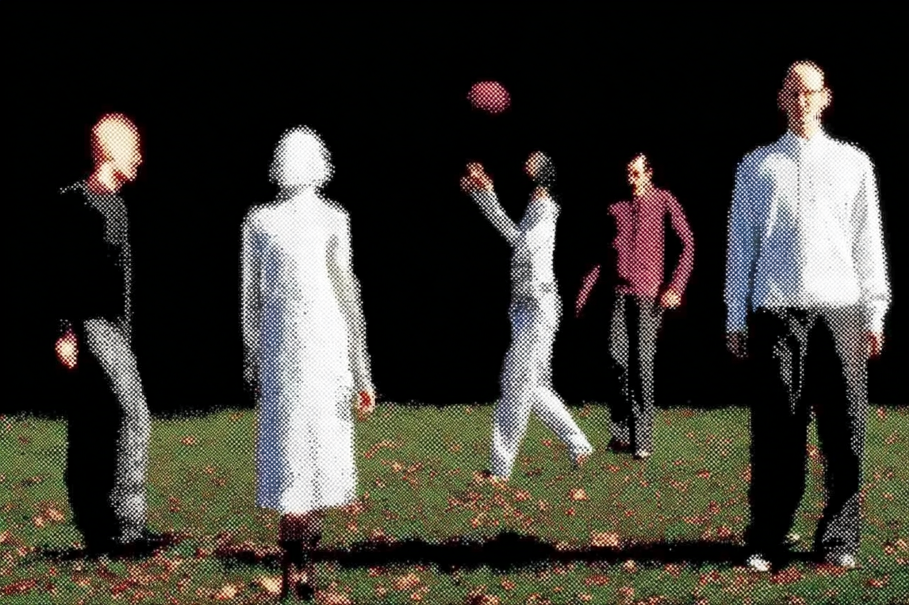
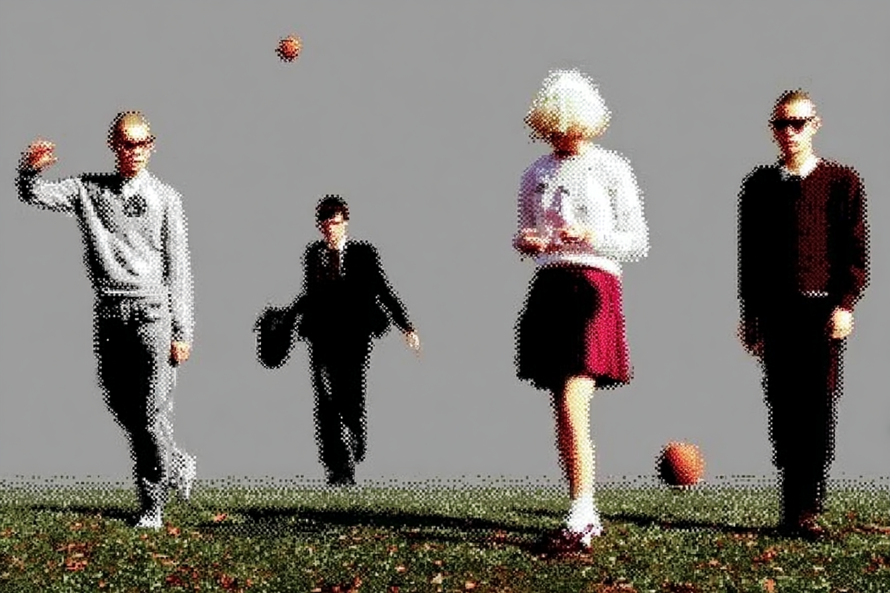

fake
parasite
Pixels are the parasites
of the digital realm.
Fake Parasite stages a parasitic relationship between image and data, tracing how the digital copy feeds on the original and returns as a new form.
Set against a culture where the fake increasingly overwhelms the real, the work looks at replication, mutation, and the unstable value of images within contemporary digital life.
Through the pixel, the smallest unit of the screen, the project approaches these fractures with dark humor and a critical gaze.


